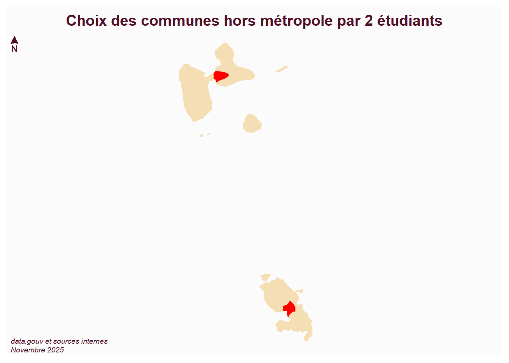
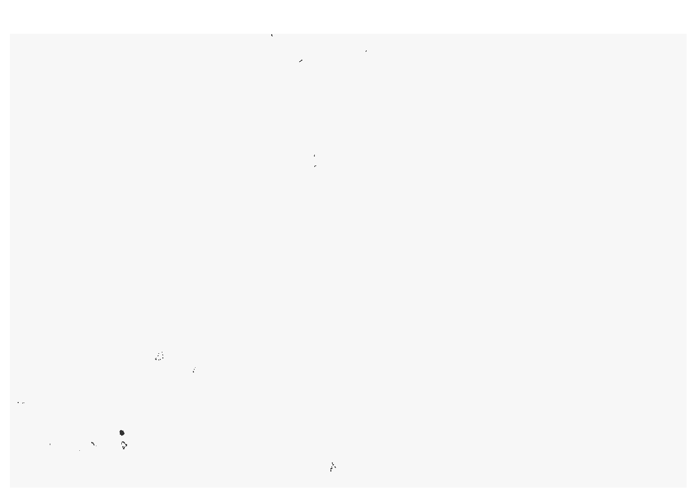

B Maranget
L6ECSIG Construction et utilisation des SIG 2025/26
(Gr. 6 et , Jeudi 16h30 - 19h30 Salle 217 sur le campus de Clignancourt)
L’idée du cours est de consolider les acquis de la L2 et de familiariser les étudiants à Arcgis pro et au codage avec R (une plateforme de versioning très utilisée.)
La thématique utilisée est Commune pauvre et/ou riche ?
data <- read.csv("data/deroule.csv", header = T, fileEncoding = "UTF-8") knitr::kable(data)
régime du contrôle continu,
Deux notes :
- une partiel
- une note maison (+ les exercices pour moitié de la note maison)
Le partiel sera sur machine d’une durée de 1h30 : - un exercice sous Arcgis Pro (10 pt) - et un autre sous R(10 pt) (avec un rendu en .pdf)
Il s’agit de vos données pour la commune choisie. Principalement :
OFGL
Filosofi
communes choisies
choix <- read.csv("data/codeINSEEetudiant.csv") choix <- c(choix$choix.de.la.commune..code.INSEE., choix$choix.de.la.commune..code.INSEE..1) # on enlève les NA et les villes identiques choix <- unique(choix[!is.na(choix)]) # on récupère la géométrie des vilels #https://geo.api.gouv.fr/communes?code=44109&format=geojson&geometry=contour library(sf)
Linking to GEOS 3.12.1, GDAL 3.8.4, PROJ 9.3.1; sf_use_s2() is TRUE
filosofi <- st_read("data/gros/carreaux_200m_met.gpkg")
Reading layer `carreaux_200m_met' from data source `C:\Users\tachasa\L6ECSIG\data\gros\carreaux_200m_met.gpkg' using driver `GPKG' Simple feature collection with 2287884 features and 34 fields Geometry type: POLYGON Dimension: XY Bounding box: xmin: 99854.56 ymin: 6049629 xmax: 1242300 ymax: 7109901 Projected CRS: RGF93 v1 / Lambert-93
choisir <- function(code){ data <- filosofi [grep(code, filosofi$lcog_geo),] st_write(data , "data/construction.gpkg", code, delete_layer = T) } res <- lapply(choix, choisir)
Deleting layer `73296' using driver `GPKG' Writing layer `73296' to data source `data/construction.gpkg' using driver `GPKG' Writing 40 features with 34 fields and geometry type Polygon. Deleting layer `97224' using driver `GPKG' Writing layer `97224' to data source `data/construction.gpkg' using driver `GPKG' Writing 4 features with 34 fields and geometry type Polygon. Deleting layer `93066' using driver `GPKG' Writing layer `93066' to data source `data/construction.gpkg' using driver `GPKG' Writing 263 features with 34 fields and geometry type Polygon. Deleting layer `31555' using driver `GPKG' Writing layer `31555' to data source `data/construction.gpkg' using driver `GPKG' Writing 2155 features with 34 fields and geometry type Polygon. Deleting layer `95428' using driver `GPKG' Writing layer `95428' to data source `data/construction.gpkg' using driver `GPKG' Writing 171 features with 34 fields and geometry type Polygon. Deleting layer `64122' using driver `GPKG' Writing layer `64122' to data source `data/construction.gpkg' using driver `GPKG' Writing 297 features with 34 fields and geometry type Polygon. Deleting layer `44213' using driver `GPKG' Writing layer `44213' to data source `data/construction.gpkg' using driver `GPKG' Writing 703 features with 34 fields and geometry type Polygon. Deleting layer `44109' using driver `GPKG' Writing layer `44109' to data source `data/construction.gpkg' using driver `GPKG' Writing 1228 features with 34 fields and geometry type Polygon. Deleting layer `69081' using driver `GPKG' Writing layer `69081' to data source `data/construction.gpkg' using driver `GPKG' Writing 214 features with 34 fields and geometry type Polygon. Deleting layer `92036' using driver `GPKG' Writing layer `92036' to data source `data/construction.gpkg' using driver `GPKG' Writing 141 features with 34 fields and geometry type Polygon. Deleting layer `44081' using driver `GPKG' Writing layer `44081' to data source `data/construction.gpkg' using driver `GPKG' Writing 340 features with 34 fields and geometry type Polygon. Deleting layer `93029' using driver `GPKG' Writing layer `93029' to data source `data/construction.gpkg' using driver `GPKG' Writing 227 features with 34 fields and geometry type Polygon. Deleting layer `92023' using driver `GPKG' Writing layer `92023' to data source `data/construction.gpkg' using driver `GPKG' Writing 200 features with 34 fields and geometry type Polygon. Deleting layer `97209' using driver `GPKG' Writing layer `97209' to data source `data/construction.gpkg' using driver `GPKG' Writing 14 features with 34 fields and geometry type Polygon. Deleting layer `28028' using driver `GPKG' Writing layer `28028' to data source `data/construction.gpkg' using driver `GPKG' Writing 71 features with 34 fields and geometry type Polygon. Deleting layer `93001' using driver `GPKG' Writing layer `93001' to data source `data/construction.gpkg' using driver `GPKG' Writing 151 features with 34 fields and geometry type Polygon. Deleting layer `92046' using driver `GPKG' Writing layer `92046' to data source `data/construction.gpkg' using driver `GPKG' Writing 113 features with 34 fields and geometry type Polygon. Deleting layer `92002' using driver `GPKG' Writing layer `92002' to data source `data/construction.gpkg' using driver `GPKG' Writing 255 features with 34 fields and geometry type Polygon. Deleting layer `92012' using driver `GPKG' Writing layer `92012' to data source `data/construction.gpkg' using driver `GPKG' Writing 170 features with 34 fields and geometry type Polygon. Deleting layer `78621' using driver `GPKG' Writing layer `78621' to data source `data/construction.gpkg' using driver `GPKG' Writing 130 features with 34 fields and geometry type Polygon. Deleting layer `33063' using driver `GPKG' Writing layer `33063' to data source `data/construction.gpkg' using driver `GPKG' Writing 863 features with 34 fields and geometry type Polygon. Deleting layer `93057' using driver `GPKG' Writing layer `93057' to data source `data/construction.gpkg' using driver `GPKG' Writing 95 features with 34 fields and geometry type Polygon. Deleting layer `50031' using driver `GPKG' Writing layer `50031' to data source `data/construction.gpkg' using driver `GPKG' Writing 172 features with 34 fields and geometry type Polygon. Deleting layer `49007' using driver `GPKG' Writing layer `49007' to data source `data/construction.gpkg' using driver `GPKG' Writing 782 features with 34 fields and geometry type Polygon. Deleting layer `72181' using driver `GPKG' Writing layer `72181' to data source `data/construction.gpkg' using driver `GPKG' Writing 910 features with 34 fields and geometry type Polygon. Deleting layer `63164' using driver `GPKG' Writing layer `63164' to data source `data/construction.gpkg' using driver `GPKG' Writing 134 features with 34 fields and geometry type Polygon. Deleting layer `94018' using driver `GPKG' Writing layer `94018' to data source `data/construction.gpkg' using driver `GPKG' Writing 56 features with 34 fields and geometry type Polygon. Deleting layer `13001' using driver `GPKG' Writing layer `13001' to data source `data/construction.gpkg' using driver `GPKG' Writing 2486 features with 34 fields and geometry type Polygon. Deleting layer `60159' using driver `GPKG' Writing layer `60159' to data source `data/construction.gpkg' using driver `GPKG' Writing 253 features with 34 fields and geometry type Polygon. Deleting layer `93070' using driver `GPKG' Writing layer `93070' to data source `data/construction.gpkg' using driver `GPKG' Writing 130 features with 34 fields and geometry type Polygon. Deleting layer `93007' using driver `GPKG' Writing layer `93007' to data source `data/construction.gpkg' using driver `GPKG' Writing 223 features with 34 fields and geometry type Polygon. Deleting layer `93064' using driver `GPKG' Writing layer `93064' to data source `data/construction.gpkg' using driver `GPKG' Writing 178 features with 34 fields and geometry type Polygon. Deleting layer `59392' using driver `GPKG' Writing layer `59392' to data source `data/construction.gpkg' using driver `GPKG' Writing 347 features with 34 fields and geometry type Polygon. Deleting layer `91339' using driver `GPKG' Writing layer `91339' to data source `data/construction.gpkg' using driver `GPKG' Writing 124 features with 34 fields and geometry type Polygon. Deleting layer `75119' using driver `GPKG' Writing layer `75119' to data source `data/construction.gpkg' using driver `GPKG' Writing 170 features with 34 fields and geometry type Polygon.
library(mapsf) mf_init(filosofi)

mf_map(res[[1]], col = "red") for (ind in 2:35){ mf_map(res [[ind]], add = T, col = "red") }

https://learn.arcgis.com/fr/gallery/#?p=arcgispro
https://framabook.org/r-et-espace/
insee <- read.csv("data/insee.csv", header = F) insee
Données communales
https://www.data.gouv.fr/pages/donnees-geo
https://www.insee.fr/fr/information/3544265